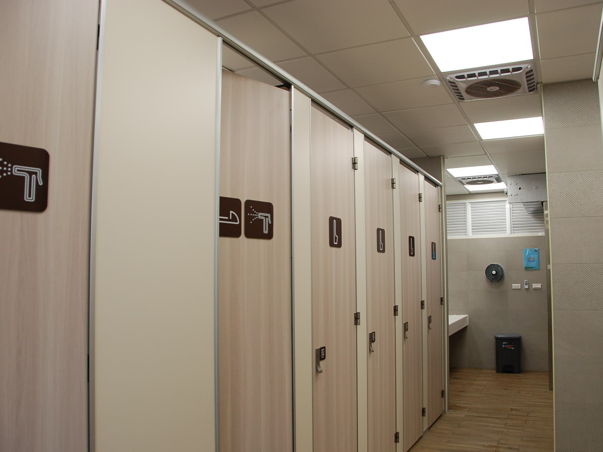
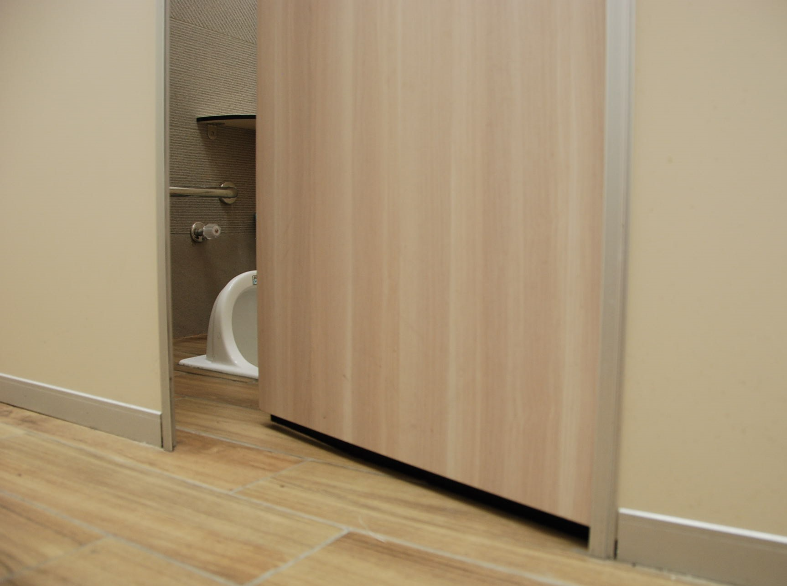
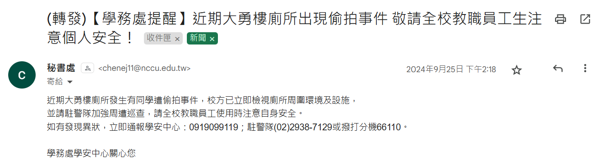
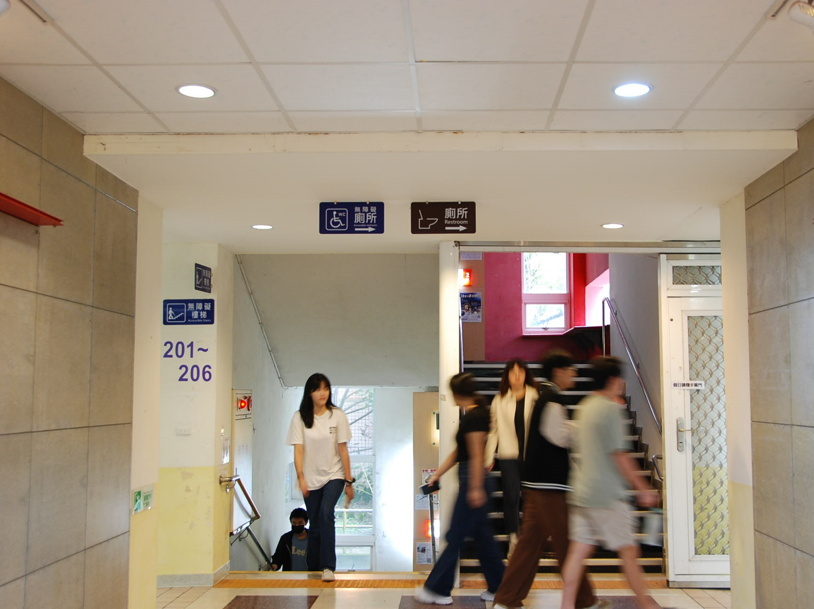

【記者郭謹萱連線報導】國立政治大學大勇樓的性別通用廁所，於10月16日再度發生偷拍事件，這是本學期內的第二起，且兩起事件間隔不到一個月。校方於事件發生後迅速召開會議，表示將改進廁間隔板空隙設計，並在廁所周邊增設監視器。學校性平委員廖晟翔指出，除了改善設計疏漏外，也應進一步強化性別平等教育。

大勇樓性別通用廁所於今年3月試辦，去除男、女二元標誌，如廁便器以獨立廁間區隔。圖／郭謹萱攝
該廁所於9月底傳出第一起偷拍，當時的應對措施尚未完全落實，10月16日再發生第二起。所幸被害同學即時反應，協助警方逮捕現行犯將其移送法辦。根據調查，10月16日，該案嫌犯利用廁間隔板下方的空隙伸出手機偷拍。校方於隔日緊急發布聲明，表示已針對廁間空隙加裝預防措施，同時檢討其他通用廁所的改善方案。此外，校方也召集總務處、學務處以及性別平等教育委員會，著手討論更完善的通用廁所設計指引，並增設監視設備。

10月16日第二次偷拍事件發生後，總務處立即於通用廁所加裝網板及毛刷，防堵隔板空隙與廁間門縫。圖／郭謹萱攝
行政流程延遲造成安全空窗期，讓校內師生難以安心。9月23日第一次偷拍事件後，學生僅收到一封全校信件提醒。政治大學社會學系田欣以學生角度觀察，「偷拍事件挑起學生的恐慌，但是學校好像也沒有多做什麼。」對此秘書處則回應，事發後總務處第一時間與監視器廠商會勘評估，但是受限於預算編列與行政程序時程，不幸造成安全防護的空窗期。廖晟翔認為，「以後學校面對這種校安事件，應該要做更快速的反應。」除了內部討論，校方也應加強與學生溝通，從安撫情緒到提供應對建議，都需更周全的考量，避免學生對校方失去信任。

9月25日，學務處寄發全校信提醒大勇樓廁所發生偷拍事件，請教職員生注意個人安全。圖／截自電子郵件
針對性別通用廁所助長偷拍的質疑，學安中心資料顯示，從112年10月至今，校內共有六起偷拍事件，其中僅有兩起發生在性別通用廁所。《政大性別通用廁所設計準則》研究團隊主持人陳虹穎指出，類似性騷擾案件在任何空間都可能發生，「原設計團隊已採取高標準設計，但仍難防有心人士的惡意利用。」廖晟翔亦強調，「我們要確保所有廁所都不會發生偷拍事件，而不是只檢討特定類別的廁所。」事件發生後，學生會已針對校園廁所進行全面安全檢查，總務處也承諾會依據修繕建議的危急程度分類，逐步改善。

陳虹穎表示，希望性別通用廁所能開創一種全新的如廁文化，不論誰使用都不被視為異樣。圖／郭謹萱攝
為提升廁所安全，陳虹穎表示，《性別通用廁所設計指引》已納入多項防範措施，如設置監視器、不定期防偷拍偵測、隔板不留縫等。旨在面對極端少數情況時，盡可能防範有心人士趁機作案。廖晟翔指出，偷拍事件反映性別平等教育仍有不足，若能普及知識，「當偷拍事件不幸發生，我們都更能夠知道該怎麼應對。」未來，性平會將與學生會合作設計「偷拍情況應變步驟」的貼紙，並舉辦反偷拍工作坊等宣導活動，促進校內學生及教職員持續關注性別議題。